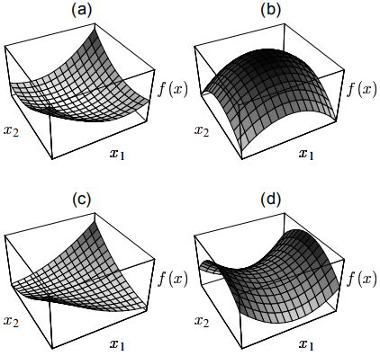
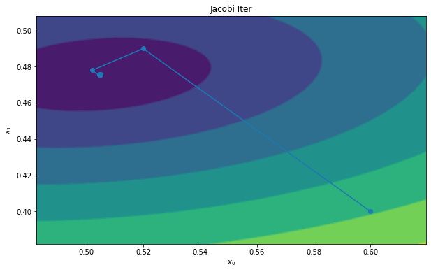
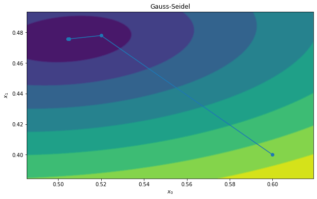
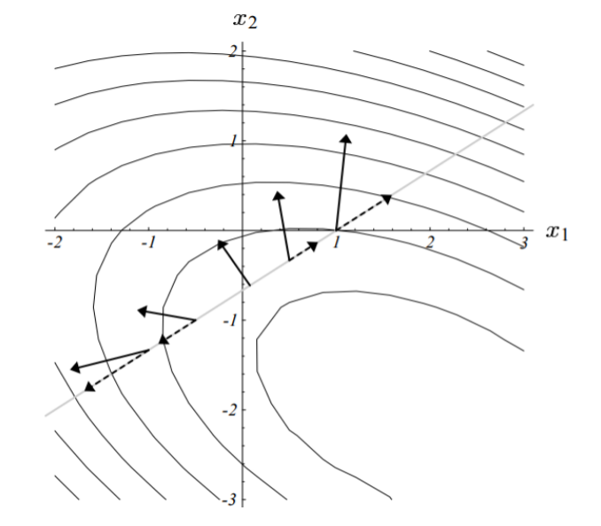
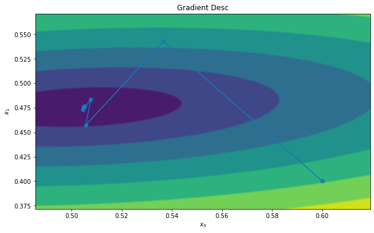

专题：线性方程组求解
简介
这里完整介绍一些求 的方法，特点是A矩阵的规模比较大。 正常来说，求解线性方程组可以通过求逆矩阵，高斯消元，克拉默法则（大学线代第一节课就学这个没用的东西，不会真的有人用吧，不会吧不会吧）等等方式去求解。 但是A很大的时候这个方法就失效了，这个时候一般用迭代法，本文以介绍迭代法为主。
这里解的方程组一定要正定，负定的矩阵解起来注定是失稳的。如果是正半定，或者说奇异矩阵（存在为0的特征值），那么解将会在某个子空间里而不唯一。
其实从二次型的视角就很容易看出：

（请注意，本文中的推导仅仅是验证实验用，性能并非最优）
Jacobi 迭代与 Gauss-Seidel
Jacobi 迭代
推导过程：
- 我们把A矩阵分尸三块：
- 其中，D是对角线，L是上三角取负，U是下三角取负。
- 这样， 就可以写成
- 移动一下：
- 由于D是对角矩阵，可无成本求逆：
于是我们利用下列公式迭代更新：
即可求得解，至于为什么是这样，可看收敛性分析。
def jacobi_iteration(A,b,init_x,iters=10):
dim = init_x.shape[0]
x = init_x
result = np.zeros((iters+1,dim))
result[0,:] = x.reshape(-1)
diag_A = np.diag(A)
D_inv = np.diag(1.0/diag_A)
LU = np.diag(diag_A) - A
B = D_inv @ LU
D_inv_b = D_inv @ b
for i in range(iters):
x = B @ x + D_inv_b
result[i+1,:] = x.reshape(-1)
return result

Gauss-Seidel
Jacobi迭代中，， 这里的 是向量，Jacobi迭代更新的时候是并行更新的。 但是Gauss-Seidel则是一个个元素更新的。
更新的时候会用到，同理，更新的时候会用到和。
（然而并没什么卵用，不必Jacobi快多少，还不能并行计算了。。。）
def gauss_seidel_iteration(A,b,init_x,iters=10):
dim = init_x.shape[0]
x = init_x
result = np.zeros((iters+1,dim))
result[0,:] = x.reshape(-1)
diag_A = np.diag(A)
D_inv = np.diag(1.0/diag_A)
LU = np.diag(diag_A) - A
B = D_inv @ LU
D_inv_b = D_inv @ b
for i in range(iters):
for d in range(dim):
x[d] = B[d,:] @ x + D_inv_b[d]
result[i+1,:] = x.reshape(-1)
return result

收敛性分析
如果矩阵A每一行的“除了对角线元素之外，其它元素的和”都要小于对角线元素的话，则这个矩阵一定可以被Jacobi迭代求解（我也不知为何如此，不过应该可以从这个条件推出谱半径小于1）。
还有一个就是B矩阵 （） 的谱半径，谱半径等于最大的特征值。每个向量都可以被分解为特征向量的和（也就是表达在某个以特征向量为基的空间），如果谱半径大于1，那么求解的时候就会发散。谱半径不仅要小于1，而且要越小越好，这样收敛才够迅速。
而为什么我们关心B的谱半径呢？
我们站在神的视角，已经知道了真实的解x，也就是说x绝对满足： ，那么不妨设置误差
每一次迭代的时候，我们看作：
所以有：
我们知道 所以消去等号两侧的两项，得到：
所以，很直观的看到，只有谱半径小于1，才能保证误差不断减少，即所谓收敛。
梯度下降
梯度下降迭代法的思路是优化
所以Loss Function就是
梯度方向有了，下面就是学习率了，和机器学习任务不一样，这里的学习率是可以有最优解的， 原理大概是如果沿着梯度方向前后走，并且记录路径上L的大小，那么我们会得到一个抛物线，抛物线是有极小值的啊！！！！
其中
或者说，走到新的点以后，其梯度应该和当前的梯度正交，这两种表述是等价的：

最优解是：
过程太难打暂略。
根据这个性质，梯度下降的算法将会以互相垂直的折线路径快速逼近最优解。
def gradient_desc(A,b,init_x,iters=10):
dim = init_x.shape[0]
x = init_x
result = np.zeros((iters+1,dim))
result[0,:] = x.reshape(-1)
for i in range(iters):
ax = A @ x
grad = ax - b
flat_x = x.reshape(-1)
lr = np.dot(flat_x,flat_x)/np.dot(ax.reshape(-1),flat_x)
x -= grad * lr
result[i+1,:] = x.reshape(-1)
return result

共轭梯度法
这个方法的思路是，不走回头路，如果我每一次新的搜索空间都和之前的所有搜索空间正交，那么可以更加高效。
但是求出一个正交的子空间（比如用施密特正交）复杂度他娘的是 啊。
Warm Start
在解微分方程（组）的时候，由于上一个时间片的状态和这个时间片的状态相差并不多，所以可以用上一个时间片的状态作为这个时间片的初始值输入，这样可以大大增加求解的效率。
MultiGrid
References
测试代码
import numpy as np
from matplotlib import pyplot as plt
def solver_visualizer(A:np.ndarray,b:np.ndarray,x:np.ndarray,steps:int=100):
"""
A: 2x2 matrix
b: 2x1 vector
x: nx2 vectors
"""
ax_min = x[:,0].min()
ax_max = x[:,0].max()
rx = ax_max - ax_min
ay_min = x[:,1].min()
ay_max = x[:,1].max()
ry = ay_max - ay_min
X,Y = np.meshgrid(
np.linspace(ax_min - 0.2 * rx,ax_max + 0.2 * rx,steps),
np.linspace(ay_min - 0.2 * ry,ay_max + 0.2 * ry,steps),
)
E = np.linalg.norm(
A @ np.array([X.reshape(-1),Y.reshape(-1)]) - b,
axis=0
).reshape(
X.shape
)
plt.figure(figsize=(10,6))
plt.contourf(X,Y,E)
plt.contour(X,Y,E)
plt.plot(x[:,0],x[:,1],'-o')
plt.show()
A = np.array([[1,0.2],[-0.3,2]])
b = np.array([0.6,0.8]).reshape(2,1)
init_x = b / np.diag(A).reshape(2,1)
# Example
solver_visualizer(A,b,gauss_seidel_iteration(A,b,init_x,10))
As the plugin is integrated with a code management system like GitLab or GitHub, you may have to auth with your account before leaving comments around this article.
Notice: This plugin has used Cookie to store your token with an expiration.